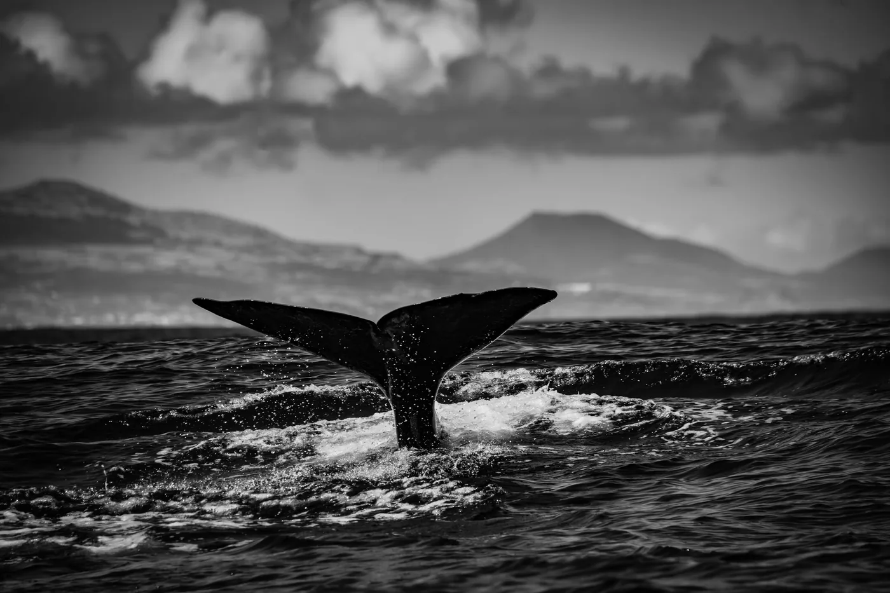

From breeding grounds to feeding stopovers: modeling the seasonal habitat use of migratory humpback whales off Peru (3–18°S Southeast Pacific)
Marine Biology
Leer publicación · DOI →Los registros validados pueden ser usados para investigación, educación y conservación. Conoce las publicaciones y las condiciones para solicitar acceso.

Estudios y trabajos realizados con datos de la Red, ordenados del más reciente al más antiguo.
Marine Biology
Leer publicación · DOI →Lee el documento con las bases de uso de los datos.
Completa el formulario de solicitud con la información de tu proyecto.
El equipo evaluará tu solicitud y responderá por correo electrónico.
Para utilizar los registros en publicaciones, informes u otros productos, incluye la siguiente cita:
Proyecto Cetáceos Perú (año de publicación o actualización). Red Ciudadana de Avistamiento de Cetáceos del Perú [versión o periodo de cobertura]. Recuperado el [fecha de consulta] de [enlace del sitio].